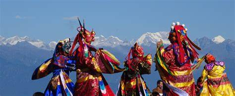

Exploring Bhutan's Vibrant Festivals
Bhutan is a country rich in cultural traditions, and its vibrant festivals are a testament to the deep-rooted beliefs and customs of its people. From the colorful masked dances to the lively festivities, these celebrations offer visitors a unique glimpse into the heart of Bhutanese culture.
"Festivals are an amazing way to experience the soul of a nation."
- Ritu Beri
One of the most renowned festivals in Bhutan is the Tsechu Festival, which takes place in various dzongkhags (districts) throughout the year. During this festival, locals and visitors alike gather to witness the mesmerizing masked dances and rituals performed by monks and lay dancers.